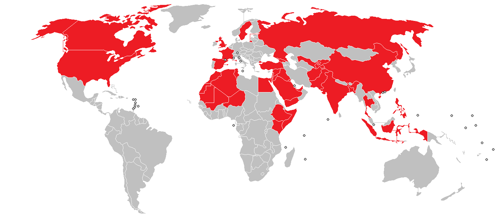

Data-Analysis
Exploratory Data Analysis (EDA) on Terrorism(1970 to 2017)
By Chitransh Tarsoliya

Table of contents
a. Loading and cleaning
- import
- load data
- frist look
- filter out important features
- Basic info about features and Null value count & persantage
- Removing nan values
b. Analysis
- country wise total terror incident
- AttackType vs country
- Analyse according to region
- Year wise total terror incident
- Year wise terror attacks in Top 10 country
- 15 Most active group
- Attacking Methods by Terrorists
- Attacking Targets by Terrorists
- success vs fail
- animation
- Most atacked cityies
- Attacking Methods by Terrorists
- Attacking Targets by Terrorists
- 15 Most active group
- Activity of most active groups
Analysis
country wise total terror incident
top 10 country
AttackType vs country
Analyse according to region
Total terror attacks and killed
AttackType vs Region
Year wise terror attacks
Year wise terror killed
Year wise total terror incident
Year wise terror attacks in Top 10 country
15 Most active group
Attacking Methods by Terrorists
Attacking Targets by Terrorists
success vs fail
Terrorism in India
animation
 on Terrorism(1970 to 2017) _ Data-Analysis_files/india.gif)